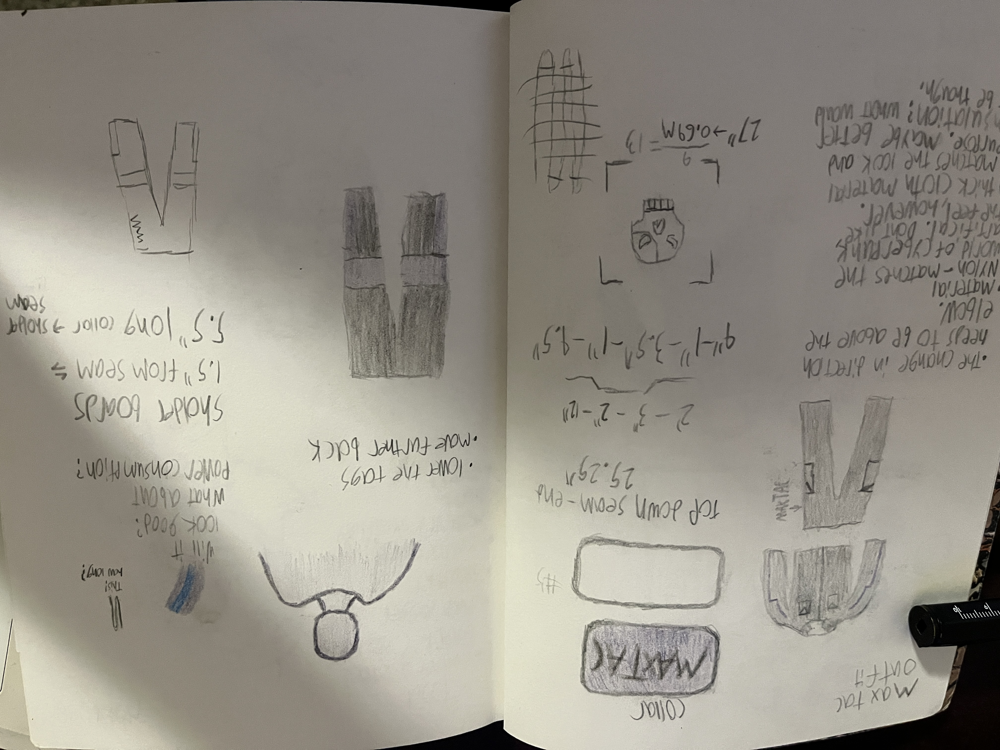

MaxTac uniform
A custom uniform project — click to view more.
A custom uniform project — click to view more.
Interactive exhibition work — click to view images and details.
An attempt to bring technology from 2077 to now
A jean jacket with a reflective design.

A stylish add-on